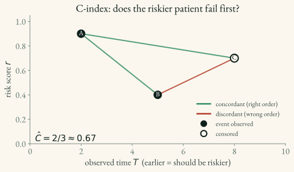

Concordance Index (C-index)
The C-index is the most common discrimination metric in survival analysis: it measures how well the model orders patients by risk, ignoring whether the predicted probabilities are themselves accurate (that’s calibration — see 3.2). It generalizes the AUC to censored data.
Definition
The C-index is the probability that, for a random comparable pair, the patient the model scores as riskier is the one who actually fails first:
C \;=\; P\big(\, \underbrace{r_i > r_j}_{\text{model scores } i \text{ riskier}} \;\big|\; \underbrace{T_i < T_j}_{i \text{ fails first}},\; \underbrace{\delta_i = 1}_{i\text{'s event is observed}} \,\big)
where r_i is subject i’s risk score (higher = more risk), T_i is the observed time, and \delta_i the event indicator (the (T, δ) notation from 1.2).
In practice it’s computed by counting concordant pairs — pairs the model got in the right order — over all comparable pairs:
\hat{C} \;=\; \frac{\#\{\text{comparable pairs with } r_i > r_j\}}{\#\{\text{comparable pairs}\}}
Comparable pairs
A pair (i, j) is comparable when we can actually tell who failed first: subject i has an observed event (\delta_i = 1) at a time earlier than subject j’s observed time (T_i < T_j). Crucially, j may be censored — we still know i failed before j left the study.
A pair is not comparable when censoring hides the order — e.g. a subject censored at time 3 versus one who fails at time 7: the first might have failed at 4 or at 40, so the pair is dropped.
Worked example — counting concordance. Three patients: | Patient | Time T | Event \delta | Risk score r | |—|—|—|—| | A | 2 | 1 (event) | 0.9 | | B | 5 | 1 (event) | 0.4 | | C | 8 | 0 (censored) | 0.7 |
Comparable pairs and whether the model ordered them correctly (riskier patient fails first): - (A, B): A fails first; is A riskier? 0.9 > 0.4 ✓ concordant - (A, C): A fails at 2, before C’s censoring at 8 → comparable; 0.9 > 0.7 ✓ concordant - (B, C): B fails at 5, before C’s censoring at 8 → comparable; is B riskier? 0.4 > 0.7 ✗ discordant
\hat{C} = 2/3 \approx 0.67. Note (A, C) counts even though C is censored — A’s event time is unambiguously earlier.

Interpretation
| C-index | Interpretation |
|---|---|
| 0.5 | Random ranking (no discrimination) |
| 0.6–0.7 | Moderate |
| 0.7–0.8 | Good |
| > 0.8 | Strong |
Harrell vs. Uno (IPCW)
There are two C-indices in common use:
- Harrell’s C — counts all comparable pairs equally. Simple, but becomes optimistically biased as censoring increases (it quietly drops the hard-to-order censored pairs).
- Uno’s C (IPCW) — reweights pairs by the inverse probability of censoring, giving a consistent estimate under heavier censoring. Prefer it when censoring is non-trivial; it needs the training survival distribution to estimate the censoring weights.
Key takeaways for applied ML scientists
- It scores ranking, not probabilities. A model can have a high C-index yet predict badly-calibrated survival curves. Always pair it with a calibration metric — the Brier score.
- Pick Uno’s C when censoring is heavy. Harrell’s C drifts optimistic as censoring rises; Uno’s IPCW correction fixes that. Below ~25–30% censoring the two roughly agree.
- Mind the sign convention. Some APIs (e.g. lifelines) expect a quantity that increases with survival — pass the negative risk score, or you’ll report 1 - C by mistake.
- It’s a single summary. It can’t tell you when the model discriminates well. For time-resolved discrimination use the time-dependent AUC.
Implementation
lifelines — Harrell’s C. Note the sign: it expects a quantity that increases with survival time, so pass the negative risk score (see 04_packages/4.2_lifelines.md):
from lifelines.utils import concordance_index
c = concordance_index(event_times, -risk_scores, event_observed)scikit-survival — both estimators; the metrics gold standard in the ecosystem (see 04_packages/4.4_scikit_survival.md):
from sksurv.metrics import concordance_index_censored, concordance_index_ipcw
harrell = concordance_index_censored(event_test, time_test, risk_scores)[0]
uno = concordance_index_ipcw(y_train, y_test, risk_scores, tau=t_max)[0]torchsurv — GPU-compatible, for in-loop monitoring of a PyTorch model (see 04_packages/4.3_torchsurv.md):
from torchsurv.metrics.cindex import ConcordanceIndex
c = ConcordanceIndex()(log_hz, events, times)Limitations
- Sensitive to censoring patterns (use Uno’s C to mitigate)
- Does not assess calibration
- A single number — does not capture time-varying discrimination